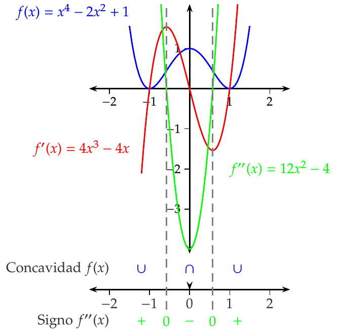

Curso cero de Matemáticas para Grados
Derivadas de funciones
Universidad CEU San Pablo
Incremento
Definición 1 (Incremento) Dada una función \(y=f(x)\), se llama incremento de \(f\) en un intervalo \([a,b]\) a la diferencia entre el valor de \(f\) en cada uno de los extremos del intervalo, y se nota
\[\Delta y= f(b)-f(a).\]
Cuando \(f\) es la función identidad \(y=x\), se cumple que
\[\Delta x=\Delta y= f(b)-f(a)=b-a,\]
y por tanto, el incremento de \(x\) en un intervalo es la amplitud del intervalo. Esto nos permite escribir el intervalo \([a,b]\) como \([a,a+\Delta x]\).
Tasa de variación media
Definición 2 (Tasa de variación media) Dada una función \(y=f(x)\), se llama tasa de variación media de \(f\) en el intervalo \([a,a+\Delta x]\), al cociente entre el incremento de \(y\) y el incremento de \(x\) en dicho intervalo, y se escribe
\[ \operatorname{TVM}(f,[a,a+\Delta x])=\frac{\Delta y}{\Delta x}=\frac{f(a+\Delta x)-f(a)}{\Delta x}. \]
Ejemplo 1 Consideremos la función \(y=x^2\) que mide el área de un cuadrado de chapa metálica de lado \(x\).
Si en un determinado instante el lado del cuadrado es \(a\), y sometemos la chapa a un proceso de calentamiento que aumenta el lado del cuadrado una cantidad \(\Delta x\), ¿en cuánto se incrementará el área del cuadrado?
\[\begin{align*} \Delta y &= f(a+\Delta x)-f(a)=(a+\Delta x)^2-a^2=\\ &= a^2+2a\Delta x+\Delta x^2-a^2=2a\Delta x+\Delta x^2. \end{align*}\]
¿Cuál será la tasa de variación media del área en el intervalo \([a,a+\Delta x]\)?
\[\operatorname{TVM}f[a,a+\Delta x]=\frac{\Delta y}{\Delta x}=\frac{2a\Delta x+\Delta x^2}{\Delta x}=2a+\Delta x.\]

Variación que experimenta el area de un cuadrado al variar el lado
Interpretación geométrica de la tasa de variación media
La tasa de variación media de \(f\) en el intervalo \([a,a+\Delta x]\) es la pendiente de la recta secante a \(f\) en los puntos \((a,f(a))\) y \((a+\Delta x,f(a+\Delta x))\).

Gráfica de la recta secante a una función en dos puntos.
Tasa de variación instantánea
En muchas ocasiones, es interesante estudiar la tasa de variación que experimenta una función, no en intervalo, sino en un punto.
Conocer la tendencia de variación de una función en un instante puede ayudarnos a predecir valores en instantes próximos.
Definición 3 (Tasa de variación instantánea y derivada) Dada una función \(y=f(x)\), se llama tasa de variación instantánea de \(f\) en un punto \(a\), al límite de la tasa de variación media de \(f\) en el intervalo \([a,a+\Delta x]\), cuando \(\Delta x\) tiende a 0, y se denota
\[\begin{align*} \operatorname{TVI}(f,a) &= \lim_{\Delta x\rightarrow 0} \operatorname{TVM}(f,[a,a+\Delta x])=\lim_{\Delta x\rightarrow 0}\frac{\Delta y}{\Delta x} = \\ &= \lim_{\Delta x\rightarrow 0}\frac{f(a+\Delta x)-f(a)}{\Delta x} \end{align*}\]
Cuando este límite existe, se dice que la función \(f\) es derivable en el punto \(a\), y al valor del mismo se le llama derivada de \(f\) en \(a\), y se nota como
\[ f'(a) \mbox{ o bien } \frac{df}{dx}(a) \]
Ejemplo 2 Consideremos de nuevo la función \(y=x^2\) que mide el área de un cuadrado de chapa metálica de lado \(x\).
Si en un determinado instante el lado del cuadrado es \(a\), y sometemos la chapa a un proceso de calentamiento que aumenta el lado del cuadrado, ¿cuál es la tasa de variación instantánea del área del cuadrado en dicho instante?
\[\begin{align*} \operatorname{TVI}(f(a)) &=\lim_{\Delta x\rightarrow 0}\frac{\Delta y}{\Delta x}=\lim_{\Delta x\rightarrow 0}\frac{f(a+\Delta x)-f(a)}{\Delta x} =\\ &=\lim_{\Delta x\rightarrow 0}\frac{2a\Delta x+\Delta x^2}{\Delta x}=\lim_{\Delta x\rightarrow 0} 2a+\Delta x= 2a. \end{align*}\]
Así pues, \(f'(a)=2a\), lo que indica que la tendencia de crecimiento el área es del doble del valor del lado.
El signo de \(f'(a)\) indica la tendencia de crecimiento de \(f\) en el punto \(a\):
- \(f'(a)>0\) indica que la tendencia es creciente.
- \(f'(a)<0\) indica que la tendencia es decreciente.
Interpretación geométrica de la tasa de variación instantánea
La tasa de variación instantánea de \(f\) en el punto \(a\) es la pendiente de la recta tangente a \(f\) en el punto \((a,f(a))\).
Gráfica de la recta tangente a una función en un punto.


Diferenciabilidad
Definición 4 (Función derivable) Dado un intervalo \(I\subseteq\mathbb{R}\), una función \(f:I\to\mathbb{R}\) y un punto \(a\in I\), se dice que \(f\) es diferenciable o derivable en \(a\), si existe el límite
\[ \lim_{x\to a}\frac{f(x)-f(a)}{x-a} \]
En tal caso, al valor del límite se le llama derivada de \(f\) en \(a\) y se denota \(f'(a)\).
Se dice que \(f\) es diferenciable en el intervalo \(I\), si \(f\) es diferenciable en todos los puntos de \(I\).
Si en la definición anterior llamamos \(h=x-a\), resulta
\[ f'(a)=\lim_{x\to a}\frac{f(x)-f(a)}{x-a}=\lim_{h\to 0}\frac{f(a+h)-f(a)}{h}, \] que es otra definición equivalente de la derivada de \(f\) en \(a\).
Definición 5 (Función derivada) Dado un intervalo \(I\subseteq\mathbb{R}\) y una función \(f:I\to\mathbb{R}\), se define la función derivada de \(f\), y se denota \(f'\), a la función cuyo dominio es el conjunto de los puntos de \(I\) donde \(f\) es diferenciable y el valor de \(f'\) es el valor de la derivada en cada uno de esos puntos.
La notación \(f'(a)\) para la derivada de \(f\) se debe a Lagrange, pero también es común en Ciencias e Ingenierías utilizar la notación de \(\frac{df}{dx}\) debida a Leibniz. En esta última notación \(df\) y \(dx\) se conocen como diferenciales de \(f\) y \(x\), y representan variaciones infinitesimales de \(f\) y \(x\) respectivamente.
Ejemplo 3 Sea \(f(x)=Id(x)=x\) la función identidad. Entonces, para cualquier \(a\in\mathbb{R}\), se tiene que
\[ \lim_{x\to a}\frac{f(x)-f(a)}{x-a} = \lim_{x\to a}\frac{x-a}{x-a} = \lim_{x\to a}1 = 1. \]
Por tanto, \(Id(x)\) es diferenciable en todo \(\mathbb{R}\) y \(Id'(a)=a\).
Con la notación de Leibniz, el cálculo de la derivada es, si cabe, más sencillo, pues se puede obtener algebraicamente,
\[ \frac{df}{dx} = \frac{dx}{dx} = 1. \]
Sea ahora \(f(x)=x^2\). Entonces, para cualquier \(a\in\mathbb{R}\), se tiene que
\[ \lim_{x\to a}\frac{f(x)-f(a)}{x-a} = \lim_{x\to a}\frac{x^2-a^2}{x-a} = \lim_{x\to a}\frac{(x-a)(x+a)}{x-a} = \lim_{x\to a}x+a = 2a. \]
Por tanto, \(f(x)\) es diferenciable en todo \(\mathbb{R}\) y \(f'(a)=2a\).
Ejemplo 4 Sea la función \(f(x)=|x|\). Veamos si \(f\) es diferenciable en \(0\). Para ello calculamos los límites laterales.
\[\begin{align*} \lim_{x\to 0^-}\frac{f(x)-f(0)}{x-0} &= \lim_{x\to 0^-} \frac{|x|}{x} = \lim_{x\to 0^-} \frac{-x}{x} = -1,\\ \lim_{x\to 0^+}\frac{f(x)-f(0)}{x-0} &= \lim_{x\to 0^+} \frac{|x|}{x} = \lim_{x\to 0^+} \frac{x}{x} = 1, \end{align*}\]
Por tanto, como los límites laterales no coinciden, \(f\) no es diferenciable en \(0\).
Recta tangente
Definición 6 (Recta tangente a la gráfica de una función) Dado un intervalo \(I\subseteq\mathbb{R}\), una función \(f:I\to\mathbb{R}\) y un punto \(a\in I\), si \(f\) es diferenciable en \(a\), se define la recta tangente a la gráfica de \(f\) en \(a\) como la recta que pasa por el punto \((a,f(a))\) con pendiente \(f'(a)\), es decir, la recta con ecuación
\[ y=f(a)+f'(a)(x-a) \]
Recta normal
Definición 7 (Recta normal a la gráfica de una función) Dado un intervalo \(I\subseteq\mathbb{R}\), una función \(f:I\to\mathbb{R}\) y un punto \(a\in I\), si \(f\) es diferenciable en \(a\), se define la recta normal a la gráfica de \(f\) en \(a\) como la recta que pasa por el punto \((a,f(a))\) y es perpendicular a la recta tangente a la gráfica de \(f\) en \(a\), es decir, la recta con ecuación
\[ y=f(a)-\frac{1}{f'(a)}(x-a) \]
Ejemplo 5 Dada la función \(y=f(x)=x^2\), la recta tangente a \(f\) en \(1\) es
\[ y = f(1)+f'(1)(x-1) = 1+2(x-1) = 2x-1, \]
y la recta normal es
\[ y = f(1)-\frac{1}{f'(1)}(x-1) = 1-\frac{1}{2}(x-1) = \frac{-x}{2}+\frac{3}{2}. \]
Teorema 1 Dado un intervalo \(I\subseteq\mathbb{R}\), una función \(f:I\to\mathbb{R}\) y un punto \(a\in I\), si \(f\) es diferenciable en \(a\) entonces \(f\) es continua en \(a\).
El recíproco de este teorema no es cierto, es decir, pueden existir funciones continuas en un punto que no sean derivables en ese punto, como por ejemplo la función \(f(x)=|x|\) que es continua en \(0\) pero, como se ha visto, no es derivable en \(0\).
Álgebra de derivadas
Proposición 1 Dado un intervalo \(I\subseteq \mathbb{R}\) y dos funciones \(f,g:I\to \mathbb{R}\), si \(f\) y \(g\) son diferenciables en \(a\in I\), entonces
\(f+g\) es diferenciable en \(a\) y \((f+g)'(a)=f'(a)+g'(a)\).
\(f-g\) es diferenciable en \(a\) y \((f-g)'(a)=f'(a)-g'(a)\).
\(c\cdot f\) es diferenciable en \(a\) y \((c\cdot f)'(a) = c\cdot f'(a)\) \(\forall c \in \mathbb{R}\).
\(f\cdot g\) es diferenciable en \(a\) y \((f\cdot g)'(a) = f'(a)g(a)+f(a)g'(a)\).
Si \(g(c)\neq 0\), \(\frac{f}{g}\) es diferenciable en \(a\) y \(\left(\dfrac{f}{g}\right)'(a)=\dfrac{f'(a)g(a)-f(a)g'(a)}{g(a)^2}\).
Ejemplo 6 Veamos cuál es la función derivada de la función racional \(f(x)=\dfrac{x^2-2x+1}{x}\).
\[\begin{align*} f'(x) &= \frac{(x^2-2x+1)'x-(x^2-2x+1)x'}{x^2} \\ &= \frac{((x^2)'-(2x)'+1')x-(x^2-2x+1)}{x^2} \\ &= \frac{(2x-2)x-(x^2-2x+1)}{x^2} \\ &= \frac{2x^2-2x-x^2+2x-1}{x^2} = \frac{x^2-1}{x^2} \forall x\neq 0. \end{align*}\]
Regla de la cadena
Teorema 2 (Regla de la cadena) Dados dos intervalos \(I,J\subseteq \mathbb{R}\) y dos funciones \(f:I\to \mathbb{R}\) y \(g:J\to\mathbb{R}\) tales que \(f(I)\subseteq J\), si \(f\) es diferenciable en en \(a\) y \(g\) es diferenciable en \(f(a)\), entonces \(g\circ f\) es diferenciable en \(a\) y \[ (g\circ f)'(a) = g'(f(a))f'(a). \]
Ejemplo 7 Si \(g(x)=\operatorname{sen}(x)\) y \(f(x)=x^2\), entonces \(g\circ f(x)=\operatorname{sen}(x^2)\) y, aplicando la regla de la cadena, su derivada vale
\[ (g\circ f)'(x)=g'(f(x))f'(x) = \cos(g(x)) 2x = \cos(x^2)2x. \]
Por otro lado, \(f\circ g(x)= (\sin(x))^2\) y, de nuevo aplicando la regla de la cadena, su derivada vale
\[ (f\circ g)'(x)=f'(g(z))g'(z) = 2g(x)\cos(x) = 2\operatorname{sen}(x)\cos(x). \]
Derivada de la función inversa
La regla de la cadena nos permite calcular la derivada de la función inversa de una función.
Teorema 3 (Derivada de la función inversa) Dado un intervalo \(I\subseteq \mathbb{R}\) y una función \(f:I\to \mathbb{R}\) continua e inyectiva en \(I\), y sea \(J=f(I)\) y \(f^{-1}:J\to\mathbb{R}\) la función inversa de \(f\). Si \(f\) es diferenciable en \(a\in I\) y \(f'(a)\neq 0\), entonces \(f^{-1}\) es diferenciable en \(f(a)\) y
\[ (f^{-1})'(f(a)) = \frac{1}{f'(a)}. \]
Corolario 1 Dado un intervalo \(I\subseteq\mathbb{R}\) y una función \(f:I\to\mathbb{R}\) inyectiva en \(I\), y sea \(J=f(I)\) y \(f^{-1}:J\to\mathbb{R}\) la función inversa de \(f\). Si \(f\) es derivable en \(I\) y \(f'(x)\neq 0\) \(\forall x\in I\), entonces \(f^{-1}\) es derivable en \(I\) y \(\forall y\in J\),
\[ (f^{-1})'(y) = \frac{1}{f'(f^{-1}(y))} \]
Ejemplo 8 La inversa de la función exponencial \(y=f(x)=e^x\) es el logaritmo neperiano \(x=f^{-1}(y)=\ln y\), de modo que, aplicando el teorema anterior, la función derivada del logaritmo es \[ \left(f^{-1}\right)'(y)=\frac{1}{f'(x)}=\frac{1}{e^x}=\frac{1}{e^{\ln y}}=\frac{1}{y}. \]
Ejemplo 9 Si \(n\in\mathbb{N}\) es par, la función \(f(x)=x^n\) \(\forall x\in \mathbb{R}^+\) es inyectiva y derivable, con \(f'(x)=nx^{n-1}>0\) \(\forall x\in\mathbb{R}^+\). Por tanto, la función \(f^{-1}(y)=\sqrt[n]{y}\) es derivable en \(\mathbb{R}^+\) y \(\forall y\in \mathbb{R}^+\),
\[\begin{align*} (f^{-1})'(y) &= \frac{1}{f'(f^{-1}(y))} = \frac{1}{f'(\sqrt[n]{y})} = \frac{1}{n(\sqrt[n]{y})^{n-1}} \\ &= \frac{1}{n (y^{1/n})^{n-1}} = \frac{1}{ny^{1-\frac{1}{n}}} = \frac{1}{n}y^{\frac{1}{n}-1}. \end{align*}\]
Por otro lado, si \(n\in\mathbb{N}\) es impar, la función \(f(x)=x^n\) \(\forall x\in\mathbb{R}\) es inyectiva y derivable, con \(f'(x)=nx^{n-1}\neq 0\) \(\forall x\neq 0\). Por tanto, la función \(f^{-1}(y)=\sqrt[n]{y}\) es derivable en \(\mathbb{R}\setminus\{0\}\) y, al igual que antes, \(\forall y\in \mathbb{R}^+\),
\[ (f^{-1})'(y) = \frac{1}{n}y^{\frac{1}{n}-1}. \]
Estudio del crecimiento de una función
La principal aplicación de la derivada es el estudio del crecimiento de una función mediante el signo de la derivada.
Teorema 4 (Signo de la derivada) Dado un intervalo \(I\subseteq\mathbb{R}\) y una función \(f:I\to\mathbb{R}\) diferenciable en \(I\), entonces:
- \(f\) es creciente en \(I\) si y sólo si \(f'(x)\geq 0\) \(\forall x\in I\).
- \(f\) es decreciente en \(I\) si y sólo si \(f'(x)\leq 0\) \(\forall x\in I\).
Ejemplo 10 La función \(f(x)=x^3\) es creciente en todo \(\mathbb{R}\) ya que \(\forall x\in \mathbb{R}\ f'(x)\geq 0\).
Una función puede ser creciente o decreciente en un intervalo y no tener derivada.
Ejemplo 11 Consideremos la función \(f(x)=x^4-2x^2+1\). Su derivada \(f'(x)=4x^3-4x\) está definida en todo \(\mathbb{R}\) y es continua.

Determinación de los extremos relativos de una función
Como consecuencia del resultado anterior, la derivada también sirve para determinar los extremos relativos de una función.
Teorema 5 (Criterio de la primera derivada) Sea una función \(f:[a,b]\to\mathbb{R}\) continua en \([a,b]\) y derivable en \((a,c)\cup (c,b)\) para un punto \(c\in(a,b)\).
- Si existe un \(\delta>0\) tal que \((c-\delta, c+\delta)\subseteq[a,b]\) y \(f'(x)\geq 0\) y \(\forall x\in(c-\delta,c)\) y \(f'(x)\leq 0\) \(\forall x\in(c,c+\delta)\), entonces \(f\) tiene un máximo relativo en \(c\).
- Si existe un \(\delta>0\) tal que \((c-\delta, c+\delta)\subseteq[a,b]\) y \(f'(x)\leq 0\) y \(\forall x\in(c-\delta,c)\) y \(f'(x)\geq 0\) \(\forall x\in(c,c+\delta)\), entonces \(f\) tiene un mínimo relativo en \(c\).
Ejemplo 12 Consideremos de nuevo la función \(f(x)=x^4-2x^2+1\). Su derivada \(f'(x)=4x^3-4x\) está definida en todo \(\mathbb{R}\) y es continua.
El recíproco de las implicaciones del teorema anterior no tiene por qué ser cierto. Por ejemplo, la función
\[ f(x)= \begin{cases} 2x^4+x^4\operatorname{sen}\left(\frac{1}{x}\right) & \mbox{si } x\neq 0,\\ 0 & \mbox{si } x=0. \end{cases} \]
tiene un mínimo relativo y absoluto en \(x=0\), pero su derivada toma valores positivos y negativos en cualquier entorno de \(0\).
Estudio de la concavidad de una función
Teorema 6 (Criterio de la segunda derivada) Dado un intervalo \(I\subseteq\mathbb{R}\) abierto y una función \(f:I\to\mathbb{R}\) dos veces diferenciable en \(I\). Entonces,
- \(f\) es cóncava hacia arriba en \(I\), si y sólo si, \(f''(x)\geq 0\) \(\forall x\in I\).
- \(f\) es cóncava hacia abajo en \(I\), si y sólo si, \(f''(x)\leq 0\) \(\forall x\in I\).
Ejemplo 13 La función \(f(x)=x^2\) tiene segunda derivada \(f''(x)=2>0\) y por tanto es cóncava en todo \(\mathbb{R}\).
Una función puede ser cóncava hacia arriba o hacia abajo en un intervalo y no tener derivada.
Ejemplo 14 Consideremos de nuevo la función \(f(x)=x^4-2x^2+1\). Su segunda derivada \(f''(x)=12x^2-4\) está definida en todo \(\mathbb{R}\) y es continua.
